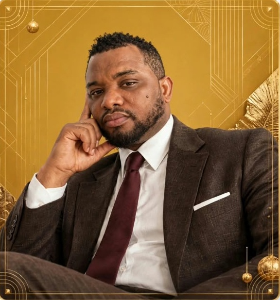

Mindset restructuring
Workshops, mentorship, and community dialogue designed to encourage confidence, resilience, and forward thinking.
Giving Voice to the Voiceless
The Lost Voice Empowerment Initiative uplifts underprivileged people, young people, and single mothers through mindset development, practical skills, and community support.


Many people face hardship without the support or opportunity to move forward. We create space for people to be heard, build practical skills, and work toward greater confidence and self-reliance.
Our work centers dignity, empathy, education, and community—because lasting change grows when people are supported to shape their own futures.
We listen to community needs and focus our work on mindset, skills, and support.
Workshops, mentorship, and community dialogue designed to encourage confidence, resilience, and forward thinking.
Practical vocational learning that helps participants develop useful skills and explore pathways to self-reliance.
Community support for single mothers, children, and people experiencing hardship.
The initiative's skills programs include practical training such as tailoring, hairdressing, catering, ICT, shoemaking, barbing, agriculture, and entrepreneurship.
Explore skills trainingRawlings Cleff Ogie, Founder & Executive Director
“I founded The Lost Voice Empowerment Initiative to be the safe place I once wished existed—a space where every silenced story is heard, every heart is valued, and every person is reminded that they matter.”
Read the founder’s welcome
Learn about the initiative, our programs, and how to reach us.